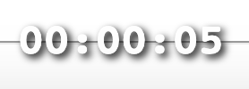

Remote Radio requires an up-to-date browser capable of supporting WebRTC and the Opus codec. Current compatibility is as follows:
| Full Support | Some support | Unsupported |
|---|---|---|
| Chrome | Safari (no MediaRecorder or WebRTC) | All other browsers... |
| Firefox | ||
| MS Edge |
In order to start firstly you must enable audio in your browser for the Remote Radio web page. This is done by clicking allow on the dialogue box which appears when the page first loads.
After you have enabled audio the user interface will appear.
This shows your current connection status, allows you to connect to the studio and allows you to change connection settings. It is not recommended to change connection settings unless you are an administrator.
If you are offline or unable to connect to Remote Radio, this section will show Disconnected. When you are connected to Remote Radio and ready to establish a connection to the studio, it will show Ready... At this point you can click the connect button to connect to the studio. The status will show Connecting... as it tries to establish a connection to the studio and Connected in green when a connection has been established. If at any point you lose the connection to the studio, this section will reflect that.
This section shows you the overall levels. The settings button on the right will allow you to change where the audio is output to on the local computer. If this meter is constantly red, you are probably too loud...
This section allows you to play two audio files, and crossfade between them. Click on a "deck" to load the file, and again to play the file. Click the eject button to remove the audio file. The deck will be grey when empty, blue when a file is loaded, green when a file is playing and red when a file is within 10 seconds of finishing. Each deck has a gain control, which allows you to adjust the volume. Each deck has a limiter, so you don't need to worry about clipping.
There are keyboard shortcuts for the decks & crossfader: For the left deck A will load/play a file and Q will eject, for the right deck L loads/plays and P ejects. You can use the left and right arrow keys to move the crossfader. Double clicking on the crossfader will reset it.
The carts play any audio file and are meant to be used for jingles, idents, etc. They work similarly to the decks. You can trigger each cart using the number keys, where 1 represents the leftmost cart.
A simple recorder to record your show. Press the record button once to start recording. This will flash red/orange to show recording is in progress and a timer will appear in the bottom right of the screen like this:
If you press the record button again you can pause your recording (button will become orange). Just press the record button again to resume recording. When you have finished recording you can download your recording from the download link. IMPORTANT: you must remember to do this - if you close the page or start recording again you will lose your recording...
You can change the name that the recording will be saved to by clicking the settings button in the recorder. Here you can also specify whether to add the date to the end of the recording title. You can also change the recording mode (not currently implemented).
Remote Radio uses a heroku hosted PeerJS server - you can create your own.
Remote Radio was created by Jerry Padfield as part of research into ways to broaden participation in community radio using open source software, convergence culture and digital technology during his PhD at University of Falmouth.
Remote Radio uses peer.js, feather icons, volume meter.
Remote Radio is released under the MIT License.